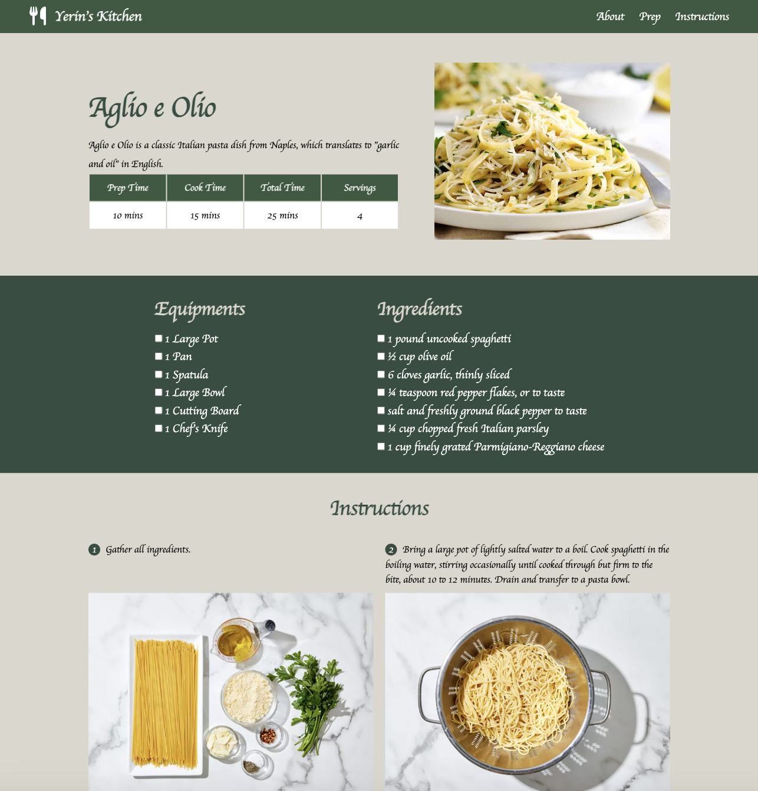

Recipe Page
My website shows the instruction of how to make Aglio e Olio, a classic Italian pasta dish from Naples, which translates to "garlic and oil" in English.
Microsite - Creative Director
The goal of my website is to provide introduction and exploration about the Rubik’s Cube, including its origins, mechanics and solving algorithms.
Microsite - Developer/Designer
The goal of my website is to be generally informational and to present a niche part of Portland’s history that has shaped people’s interpretation of the city.